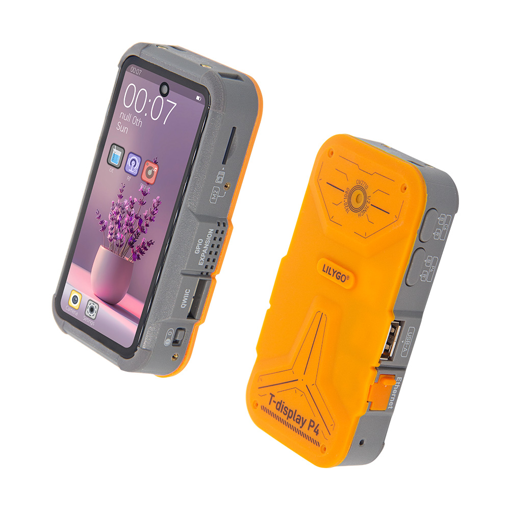
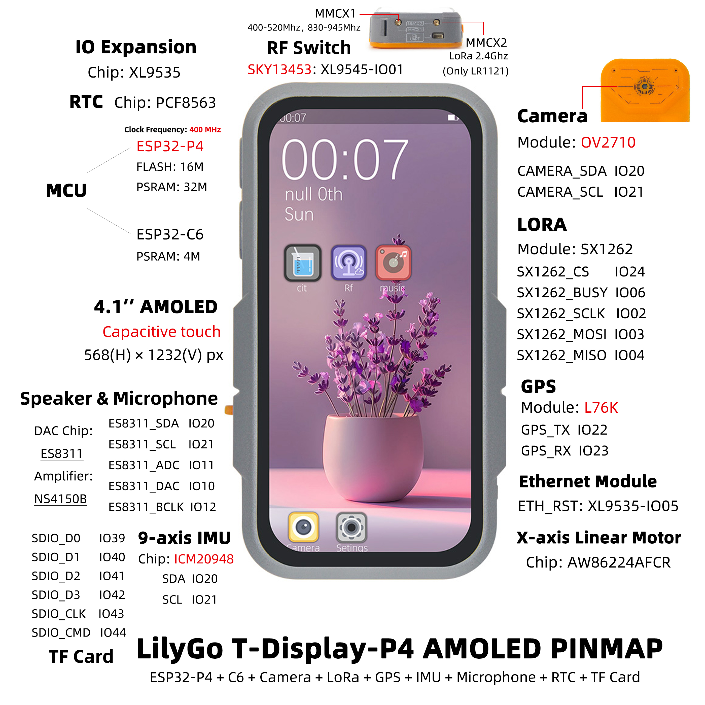

English
EnglishLILYGO T-Display-P4
Version History:
| Version | Update date | Update description |
|---|---|---|
| T-Display-P4_V1.0 | 2025-06-13 | Initial Version |
| T-Display-P4-Keyboard_V1.0 | 2025-09-12 | Keyboard Expansion Board Initial Version |
Purchase Links
| Product | SOC | FLASH | PSRAM | Link |
|---|---|---|---|---|
| T-Display-P4_V1.0 | ESP32-P4 | 16MB | - | LILYGO Mall |
| T-Display-P4-Keyboard_V1.0 | - | - | - | LILYGO Mall |
Table of Contents
Description
T-Display-P4 is a multi-functional development board based on the ESP32-P4 high-performance core, designed for complex graphics processing, multimedia interaction, and IoT applications. Main features include:
- High-Performance Processing: Equipped with ESP32-P4 processor, supports complex graphics and video task processing.
- HD Display: Features a 4.05-inch MIPI interface screen with a resolution of 540×1168px, supporting touch.
- Dual-Core Collaboration: Onboard ESP32-C6 auxiliary processor, supports Wi-Fi 6 and Bluetooth 5.3.
- Rich Peripherals: Integrates speaker, microphone, linear vibration motor, LoRa, GPS, Ethernet, camera, battery monitoring, and other modules.
- High Expandability: Provides abundant GPIO interfaces, supports keyboard expansion board (T-Display-P4-Keyboard).
Preview
Physical Image

Pin Diagram
T-Display-P4 has two versions: Amoled and TFT. Pin diagrams are as follows:
Amoled Version

TFT Version

Modules
T-Display-P4 Main Board
1. Core Processor
- Chip: ESP32-P4
- FLASH: 16MB
- Documentation: Espressif Official Documentation
2. Auxiliary Processor
- Module: ESP32-C6-MINI-1U
- Chip: ESP32-C6-FH4
- PSRAM: 4MB
- Communication Protocol: SDIO
- Documentation: ESP32-C6-MINI-1U Datasheet
3. Display and Touch
| Model | H0405S002T002-V0 (TFT) | H0410S001AMT001-V0 (AMOLED) |
|---|---|---|
| Size | 4.05 inch | 4.1 inch |
| Type | α-Si TFT | AMOLED |
| Resolution | 540×1168px | 568×1232px |
| Interface | MIPI + I2C | MIPI + I2C |
| Driver Chip | HI8561 | RM69A10 + GT9895 |
| Brightness | 550 cd/m² | 500 cd/m² |
| Contrast | 1200:1 | 20000:1 |
| Touch Points | 10 points | 10 points |
| Documentation | HI8561 | RM69A10 GT9895 |
4. Audio Module
- DAC Chip: ES8311
- Amplifier Chip: NS4150B
- Microphone: Mic Head
- Communication Protocol: I2S
- Documentation: ES8311 , NS4150B
5. Vibration Motor
- Driver Chip: AW86224AFCR
- Communication Protocol: I2C
- Documentation: AW86224
6. LoRa Module
- Module: HPD16A
- Chip: SX1262
- Communication Protocol: SPI
- Documentation: SX1261-2
7. GPS Module
- Module: L76K
- Communication Protocol: UART
- Documentation: L76K
8. RTC Clock
- Chip: PCF8563
- Communication Protocol: I2C
- Documentation: PCF8563
9. Charging Management
- Chip: LGS4056H
- Description: Supports three-wire battery NTC temperature detection
- Documentation: LGS4056H
10. Battery Monitoring
- Chip: BQ27220
- Communication Protocol: I2C
- Documentation: BQ27220
11. Camera
- Model: OV2710 (MIPI interface)
- Documentation: OV2710
12. Inertial Sensor
- Chip: ICM20948
- Communication Protocol: I2C
- Documentation: ICM20948
13. IO Expansion
- Chip: XL9535
- Communication Protocol: I2C
- Documentation: XL9535
T-Display-P4-Keyboard Expansion Board
1. Keyboard Driver
- Chip: TCA8418
- Communication Protocol: I2C
- Documentation: TCA8418
2. Backlight Driver
- Chip: SY7200A
- Communication Protocol: PWM
- Documentation: SY7200A
3. IO Expansion
- Chip: XL9555
- Communication Protocol: I2C
- Documentation: XL9555
4. Wireless Module (T-MixRF)
| Module | Chip | Protocol | Documentation |
|---|---|---|---|
| CC1101 | CC1101 | SPI | CC1101 |
| NRF24L01 | NRF24L01 | SPI | NRF24L01 |
| NFC | ST25R3916 | SPI | ST25R3916 |
Overview
| Component | Description |
|---|---|
| MCU | ESP32-S3R8 Dual-core LX7 microprocessor |
| FLASH | 16MB |
| PSRAM | 8MB |
| Display | 1.91 inch RM67162 IPS AMOLED |
| Touch | Capacitive Touch Screen |
| LoRa | LR1121 (1276/868/915MHz) |
| Storage | TF Card |
| RTC | PCF85063ATL/1 |
| Power Management | AXPM65611 + BQ25896 |
| Wireless | 2.4 GHz Wi-Fi & Bluetooth 5 (LE) |
| USB | 1 × USB Port and OTG (TYPE-C) |
| IO Interface | 2×13 Dual-row Expansion Interface |
| Expansion Interface | FPC Antenna + TF Card + STEMMA QT/QWIIC + JST-GH 1.25MM |
| Buttons | 1 x RESET Button + 1 x BOOT Button |
| Mounting Holes | 4 × 2mm Positioning Holes |
| Dimensions | 60×32×12mm |
Quick Start
Example Support
T-Display-P4 Examples
| example | [vscode][esp-idf-v5.4.0] |
description | picture |
|---|---|---|---|
| afe | |||
| aw86224 | |||
| bq27220 | |||
| deep_sleep | |||
| es8311 | |||
| es8311_sd_wav | |||
| esp_hosted_mcu_sdio_wifi | |||
| esp32c6_at_host_sdio_uart | |||
| esp32c6_at_host_sdio_wifi | |||
| icm20948 | |||
| iic_scan | |||
| l76k | |||
| lvgl_9_ui | Factory Example | ||
| pcf8563 | |||
| radiolib_sx1262_send_receive | |||
| screen_camera | |||
| screen_lvgl | |||
| screen_lvgl_touch_draw | |||
| sgm38121 | |||
| sx1262_gfsk_send_receive | |||
| sx1262_lora_send_receive | |||
| sx1262_tx_continuous_wave | |||
| tusb_serial_device | |||
| xl9535 | |||
| xiaozhi |
T-Display-P4-Keyboard Examples
| example | [vscode][esp-idf-v5.4.0] |
description | picture |
|---|---|---|---|
| radiolib_cc1101_send_receive | |||
| radiolib_nrf24l01_send_receive | |||
| screen_tca8418_lvgl_touch_draw | |||
| st25r3916 | |||
| tca8418 | |||
| xl9555 |
ESP-IDF Visual Studio Code
Install Visual Studio Code, choose the installation according to your system type.
Open the "Extensions" in the sidebar of Visual Studio Code (or use Ctrl+Shift+X to open extensions), search for the "ESP-IDF" extension and install it.
While the extension is installing, use the git command to clone the repository:
git clone --recursive https://github.com/Xinyuan-LilyGO/T-Display-P4.gitYou need to add "--recursive" when cloning. If not added during cloning, you need to initialize the submodules later:
git submodule update --init --recursiveDownload and install ESP-IDF v5.4.1, record the installation path, open the previously installed "ESP-IDF" extension and open "Configure ESP-IDF Extension", select the "USE EXISTING SETUP" menu, select the "Search ESP-IDF in system" field, correctly configure the previously recorded installation path:
- ESP-IDF directory (IDF_PATH):
Your installation path xxx\Espressif\frameworks\esp-idf-v5.4 - ESP-IDF Tools directory (IDF_TOOLS_PATH):
Your installation path xxx\Espressif
Click the "install" button in the bottom right corner to install the framework.
- ESP-IDF directory (IDF_PATH):
Click the ESP-IDF extension menu "SDK Configuration Editor" in the bottom menu bar of Visual Studio Code, search for the "Select the example to build" field in the search bar, select the project you need to compile, then search for the "Select the camera type" field in the search bar, select the camera type onboard your board, and click Save.
Click "Set Espressif device target" in the bottom menu bar of Visual Studio Code, select ESP32P4, click "Build Project" in the bottom menu bar, wait for the build to complete, then click "Select port to use" in the bottom menu bar, then click "Flash Project" in the bottom menu bar to flash the program.

Firmware Downloads
| firmware | description | picture |
|---|---|---|
| t_display_p4_lvgl_9_ui | Factory Program | |
| t_display_p4_keyboard_lvgl_9_ui | Keyboard Expansion Board Factory Program | |
| esp32c6_at | esp32c6-at Factory Program | |
| esp32c6_slave_esp_hosted_mcu_network_adapter | ||
| t_display_p4_xiaozhi |
Pin Overview
For pin definitions, please refer to the configuration files:
t_display_p4_config.h
t_display_p4_keyboard_config.h
Development Platforms
Related Tests
Power Consumption
| firmware | program | description | picture |
|---|---|---|---|
| deep_sleep(single_board) | deep_sleep | Average current consumption: 1.2mA For more information, please view Power Consumption Test Log |
Camera
| program | description | picture |
|---|---|---|
| uvc_sc2336 | Original image and captured screen image screenshot effect | |
| uvc_ov2710 | Original image and captured screen image screenshot effect | |


FAQ
- Q. I still don't know how to set up the programming environment after reading the above tutorial. What should I do?
- A. If you still don't understand how to set up the environment after reading the above tutorial, you can refer to the LilyGo-Document documentation for setup instructions.
- Q. Why does my board keep failing to upload programs?
- A. Please hold down the "BOOT" button and try uploading the program again.
Q. Why do I fail when selecting the target compilation chip in the espidf framework or when configuring menuconfig in the SDK, reporting the following error:
asyncio.exceptions.LimitOverrunError: Separator is found, but chunk is longer than limit ValueError: Separator is found, but chunk is longer than limitA. This is a bug in the espidf framework v5.4~v5.5. You need to modify line 351 of the file at path
esp-idf-v5.x\tools\idf_py_actions\tools.pyas follows:Original code: p = await asyncio.create_subprocess_exec(*cmd, env=env_copy, limit=1024 * 256, cwd=self.cwd, stdout=asyncio.subprocess.PIPE,stderr=asyncio.subprocess.PIPE) Modified code: p = await asyncio.create_subprocess_exec(*cmd, env=env_copy, limit=1024 * 512, cwd=self.cwd, stdout=asyncio.subprocess.PIPE,stderr=asyncio.subprocess.PIPE)
Projects
Resources
- ESP32-S3 Datasheet
- LR1121 Datasheet
- (More resources please refer to GitHub repository)